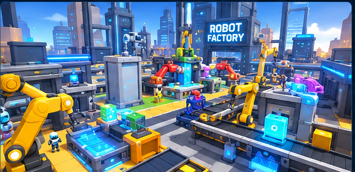
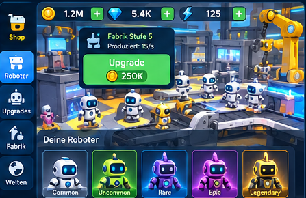
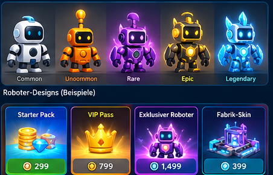

01 · Factory World
Freundliche Maschinen, räumliche Tiefe und klar unterscheidbare Produktionsstationen.
Visual Design Bible v0.1 · Originale Konzeptreferenzen für Codex, keine echten Roblox-Studio-Screenshots

Freundliche Maschinen, räumliche Tiefe und klar unterscheidbare Produktionsstationen.

Klare Fortschrittsanzeige, kurze Upgrade-Interaktion und zugängliche Touch-Navigation.

Spielerische Silhouetten, kosmetische Vielfalt und kaufbare Dekorationen mit klaren Preisen.
Hinweis: Die KI-generierten Texte, Beträge und Interface-Details sind nicht als Daten oder tatsächliche UI-Spezifikation zu verwenden. Kanonische Anforderungen stehen in docs/VISUAL_DESIGN_BIBLE.md.